1
8月4日（周二）
✈️ 上海 → 吉隆坡 · 抵达之夜
🌤 吉隆坡 25~33°C · 偶有阵雨
🏨 吉隆坡凯煌酒店 Concorde Hotel KL
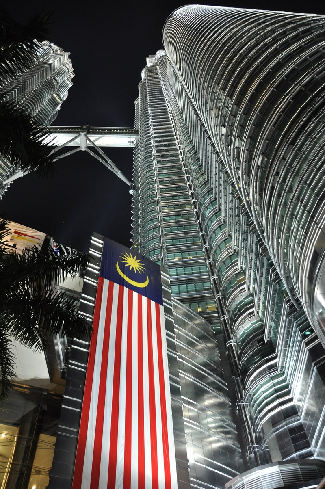
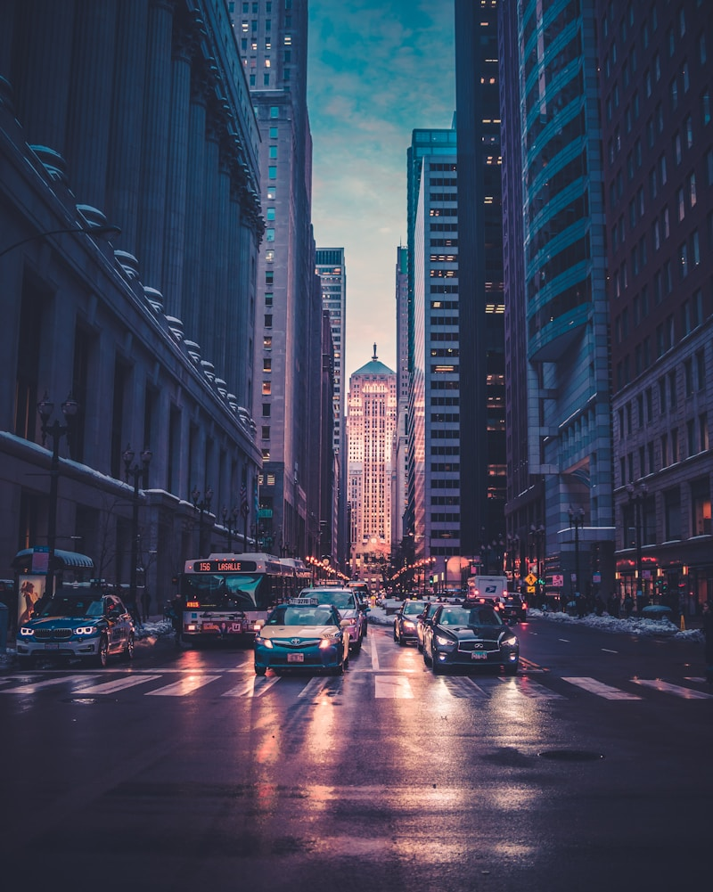
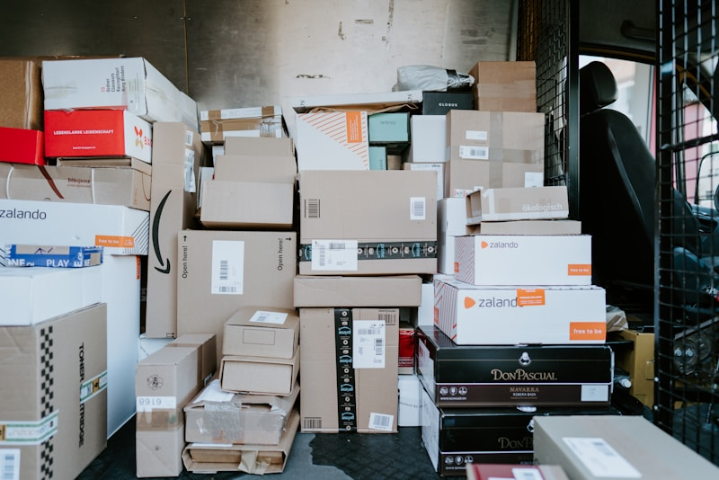

12:00-13:30
出发前往浦东机场
建议各家庭自行安排出发时间，提前2小时抵达机场T2航站楼
建议各家庭自行安排出发时间，提前2小时抵达机场T2航站楼
15:25 → 21:00
✈️ MH389 浦东T2 → 吉隆坡T1
马来西亚航空 · 空客A330-300 · 飞行约5h35m
机上提供晚餐和饮品
马来西亚航空 · 空客A330-300 · 飞行约5h35m
机上提供晚餐和饮品
21:00-22:00
22:00-22:40
🚙 专车接机 → 酒店
旅行社安排31座专车+中文导游接机，送往吉隆坡凯煌酒店
车程约40分钟
旅行社安排31座专车+中文导游接机，送往吉隆坡凯煌酒店
车程约40分钟
22:40-23:30
🏨 办理入住 · 休息
Concorde Hotel KL · Jalan Sultan Ismail
💡 酒店附近有7-11便利店，可买水和小吃
Concorde Hotel KL · Jalan Sultan Ismail
💡 酒店附近有7-11便利店，可买水和小吃
📌 行前备忘
✈️ 建议提前选座（靠走道方便照顾家人）· 📱 抵达后换马来西亚电话卡或开通国际漫游 · 💵 机场可ATM取令吉（Maybank汇率最佳）· 🧥 飞机上冷气较足，带一件薄外套
2
8月5日（周三）
🏙️ 吉隆坡市区包车一日游
🌤 晴间多云 26~34°C
🏨 吉隆坡凯煌酒店 Concorde Hotel KL
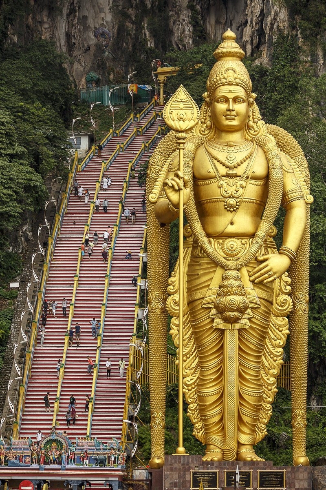
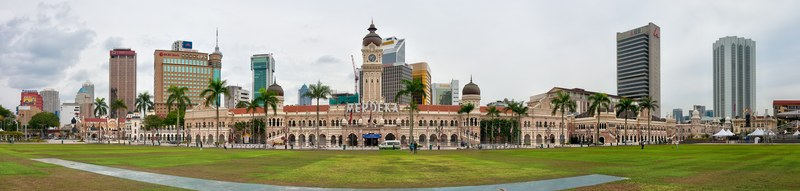
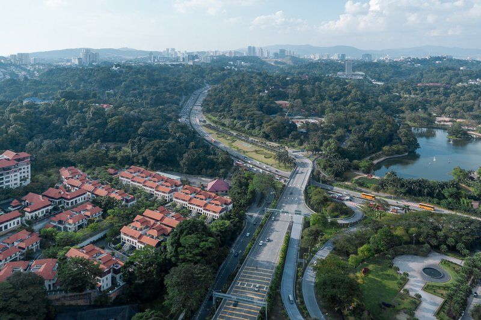
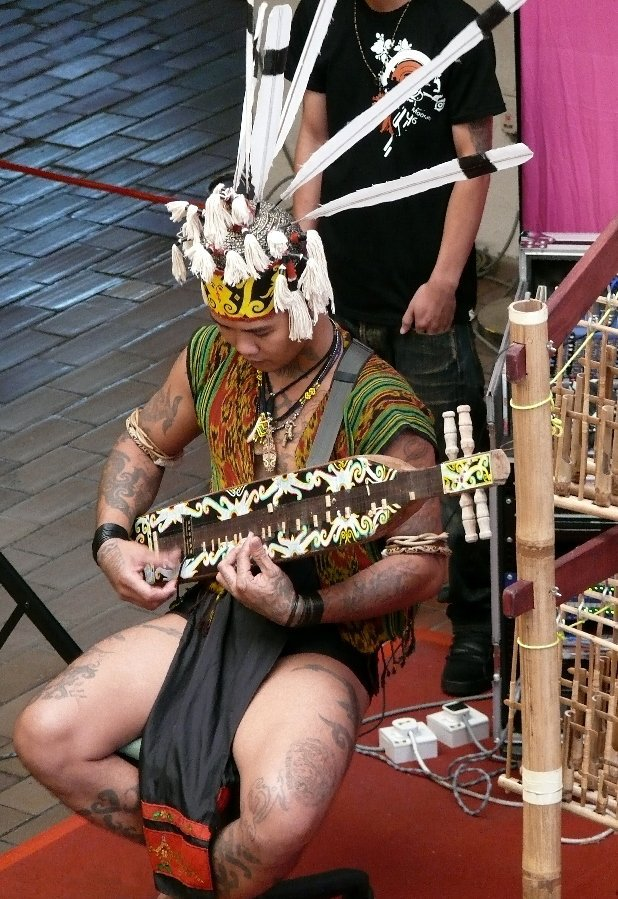
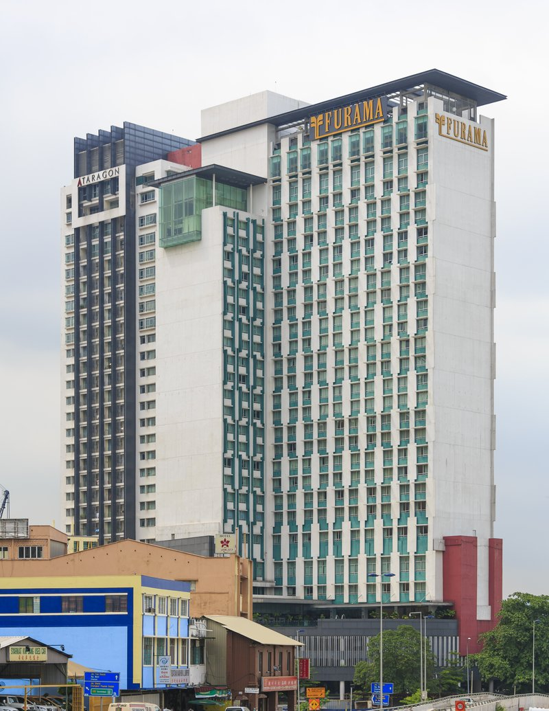
07:30-08:30
🍳 酒店早餐
酒店提供自助早餐，品种丰富
酒店提供自助早餐，品种丰富
10:00-10:30
🏛️ 新国家皇宫（Istana Negara）
🎫 外观免费 马来西亚最高元首的官方官邸，金色圆顶的伊斯兰风格建筑，可在正门与骑兵卫兵合影
🎫 外观免费 马来西亚最高元首的官方官邸，金色圆顶的伊斯兰风格建筑，可在正门与骑兵卫兵合影
10:30-11:00
🛣️ 联邦大道（Federal Highway）
吉隆坡最美公路，沿途可拍城市天际线照片
吉隆坡最美公路，沿途可拍城市天际线照片
11:00-12:30
🕉️ 黑风洞（Batu Caves）
🎫 免费 印度教圣地，272级彩虹阶梯，巨大的穆卢干神像金碧辉煌
⚠️ 注意猴子会抢食物和眼镜！不要手提塑料袋
🎫 免费 印度教圣地，272级彩虹阶梯，巨大的穆卢干神像金碧辉煌
⚠️ 注意猴子会抢食物和眼镜！不要手提塑料袋
12:30-14:00
🍜 午餐：地道美食体验
推荐 肉骨茶（Bak Kut Teh） — 吉隆坡必吃，药材炖排骨，汤浓味香
椰浆饭（Nasi Lemak） — 马来西亚"国菜"，椰奶蒸饭配辣酱、小鱼干
导游会推荐当地人气餐厅
推荐 肉骨茶（Bak Kut Teh） — 吉隆坡必吃，药材炖排骨，汤浓味香
椰浆饭（Nasi Lemak） — 马来西亚"国菜"，椰奶蒸饭配辣酱、小鱼干
导游会推荐当地人气餐厅
14:00-15:00
🎨 中央艺术坊（Central Market）
手信购物好去处，各种马来西亚手工艺品、蜡染布、锡器、冰箱贴等
💡 记得砍价，一般从标价5折开始
手信购物好去处，各种马来西亚手工艺品、蜡染布、锡器、冰箱贴等
💡 记得砍价，一般从标价5折开始
15:00-15:45
🇲🇾 独立广场（Merdeka Square）+ 苏丹阿都沙末大厦
🎫 免费 1957年马来西亚独立宣言所在地，对面是摩尔式风格的宏伟建筑
🎫 免费 1957年马来西亚独立宣言所在地，对面是摩尔式风格的宏伟建筑
16:00-17:00
🛍️ 武吉免登（Bukit Bintang）/ 柏威年广场
吉隆坡最繁华商圈，超火的麦当劳路口拍照打卡
柏威年广场内有大量品牌店、美食广场
吉隆坡最繁华商圈，超火的麦当劳路口拍照打卡
柏威年广场内有大量品牌店、美食广场
17:00-17:30
🗼 双子塔（KLCC）打卡
吉隆坡地标，高452米，在塔前广场拍照最佳
也可进入Suria KLCC商场逛
吉隆坡地标，高452米，在塔前广场拍照最佳
也可进入Suria KLCC商场逛
18:00-20:00
🌙 阿罗街（Jalan Alor）夜市晚餐
必吃 吉隆坡最有名的美食街！推荐：
· 烤魔鬼鱼（Ikan Bakar）🔥
· 沙爹串（Satay）— 花生酱烤鸡肉串
· 炒粿条（Char Kway Teow）
· 魔鬼鱼烧🔥 · 椰子冰沙 🥥
· 尤其推荐：黄亚华烤鸡翅（Wong Ah Wah）— 阿罗街标志性美食！
必吃 吉隆坡最有名的美食街！推荐：
· 烤魔鬼鱼（Ikan Bakar）🔥
· 沙爹串（Satay）— 花生酱烤鸡肉串
· 炒粿条（Char Kway Teow）
· 魔鬼鱼烧🔥 · 椰子冰沙 🥥
· 尤其推荐：黄亚华烤鸡翅（Wong Ah Wah）— 阿罗街标志性美食！
20:30
🚙 返回酒店休息
结束充实的一天～
结束充实的一天～
📌 今日贴士
🚐 今日为包车一日游（不超过10小时）· 🌞 吉隆坡炎热，备足水、防晒霜、帽子 · 🏪 便利店随时可买饮料 · 👟 穿舒适鞋子，步行较多
3
8月6日（周四）
🏛️ 马六甲南洋风情包车一日游
🌤 晴 26~33°C
🏨 吉隆坡凯煌酒店 Concorde Hotel KL
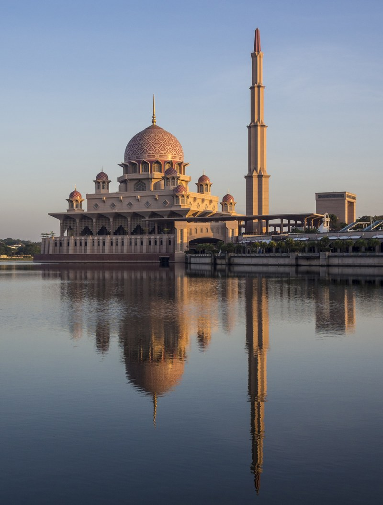
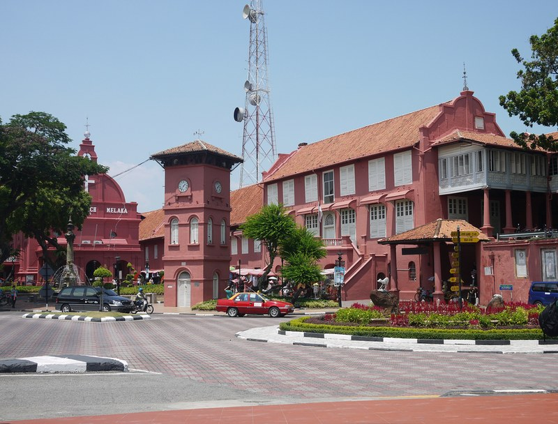
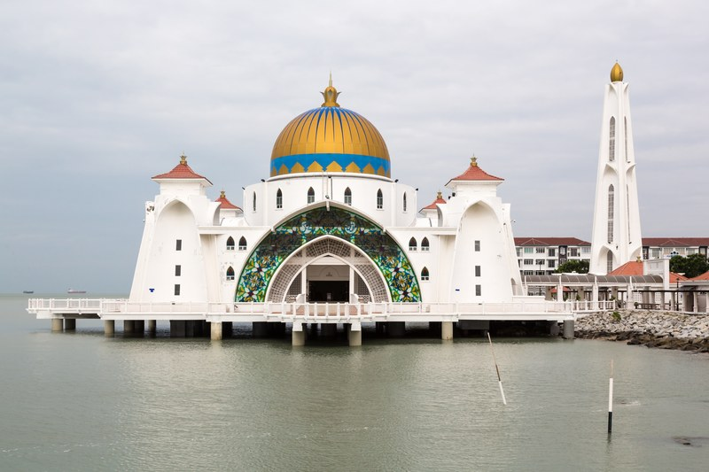
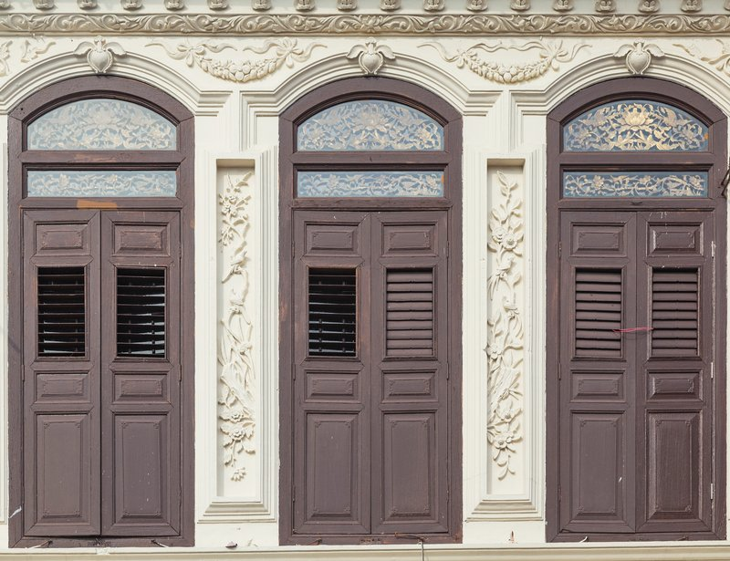
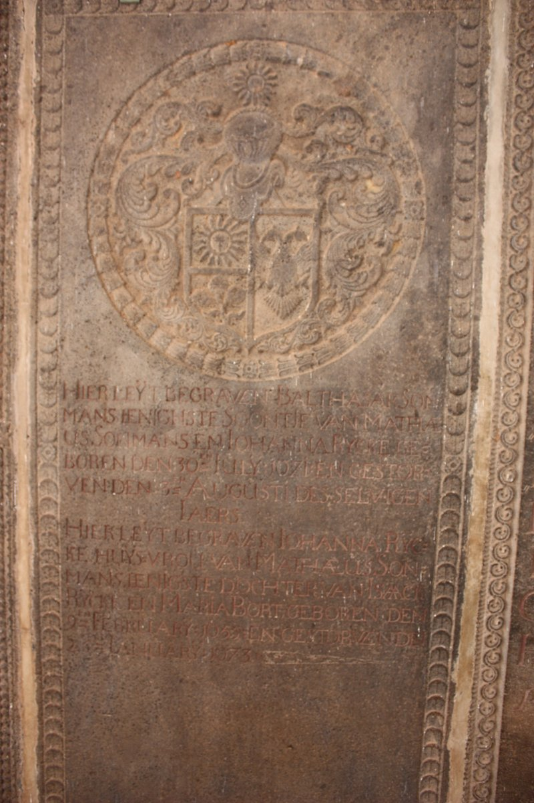
07:00-07:30
🍳 酒店早餐
09:00-09:40
🚙 酒店出发，前往布城（Putrajaya）
车程约40分钟
车程约40分钟
09:40-10:15
💒 粉红清真寺（Putra Mosque）+ 首相府
🎫 免费 马来西亚最大的清真寺，通体玫瑰粉色，水上建筑如梦如幻
女性需穿长袍（入口免费提供），男士穿长裤
湖边有绝佳拍照点📸
🎫 免费 马来西亚最大的清真寺，通体玫瑰粉色，水上建筑如梦如幻
女性需穿长袍（入口免费提供），男士穿长裤
湖边有绝佳拍照点📸
10:30-12:00
🚙 前往马六甲（Melaka）
车程约1.5小时，可在车上小憩
车程约1.5小时，可在车上小憩
12:00-12:30
🏛️ 荷兰红屋（Stadthuys）+ 荷兰广场
🎫 免费 建于1650年的荷兰殖民建筑，是东南亚最古老的荷兰建筑
红色外墙极其上镜，广场中央的维多利亚女王喷泉是标志
🎫 免费 建于1650年的荷兰殖民建筑，是东南亚最古老的荷兰建筑
红色外墙极其上镜，广场中央的维多利亚女王喷泉是标志
12:30-14:00
🍚 鸡场街（Jonker Street）午餐
必吃 · 鸡粒饭（Chicken Rice Ball） — 马六甲特有！米饭搓成圆形，配白切鸡
· 推荐：中华茶室（和记）或 古城鸡粒饭
· 甜点：Nadeje千层蛋糕 — 马六甲最美味的千层蛋糕 🍰
鸡场街是马六甲最著名的文化街，午餐后可闲逛
必吃 · 鸡粒饭（Chicken Rice Ball） — 马六甲特有！米饭搓成圆形，配白切鸡
· 推荐：中华茶室（和记）或 古城鸡粒饭
· 甜点：Nadeje千层蛋糕 — 马六甲最美味的千层蛋糕 🍰
鸡场街是马六甲最著名的文化街，午餐后可闲逛
14:00-14:30
⛪ 圣地亚哥古城门 + 圣保罗教堂
🎫 免费 葡萄牙殖民时期留下的古城门和教堂废墟，可俯瞰马六甲海峡
🎫 免费 葡萄牙殖民时期留下的古城门和教堂废墟，可俯瞰马六甲海峡
15:00-16:00
🕌 马六甲海峡清真寺（Malacca Straits Mosque）
🎫 免费 建在海上的清真寺，涨潮时如悬浮水面
黄昏时分的夕阳是绝美拍摄时间📸
🎫 免费 建在海上的清真寺，涨潮时如悬浮水面
黄昏时分的夕阳是绝美拍摄时间📸
16:00-16:30
🌊 马六甲海峡地标打卡
在马六甲海峡标志点合影留念
在马六甲海峡标志点合影留念
17:00-19:00
🚙 返回吉隆坡
车程约2小时
车程约2小时
19:00-20:30
🍽️ 晚餐（自由安排）
返回酒店附近用餐，或前往推荐 十号胡同（Lot 10 Hutong）— 吉隆坡美食中心，集合多种地道小吃
返回酒店附近用餐，或前往推荐 十号胡同（Lot 10 Hutong）— 吉隆坡美食中心，集合多种地道小吃
📌 今日贴士
🚐 今日包车全程约10小时 · 👗 粉红清真寺需穿着得体（入口免费提供长袍）· 🌞 马六甲比吉隆坡更热，注意防暑 · 💧 车上备足饮用水
4
8月7日（周五）
⛰️ 云顶高原一日游（Genting Highlands）
🌤 云顶 18~25°C（比市区凉爽）
🏨 吉隆坡凯煌酒店 Concorde Hotel KL
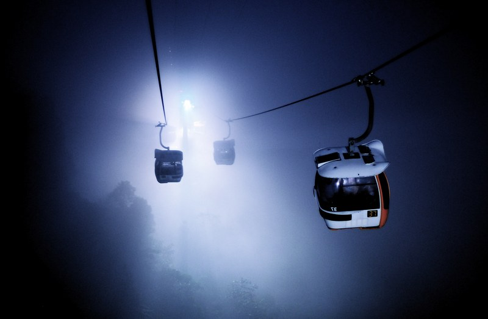
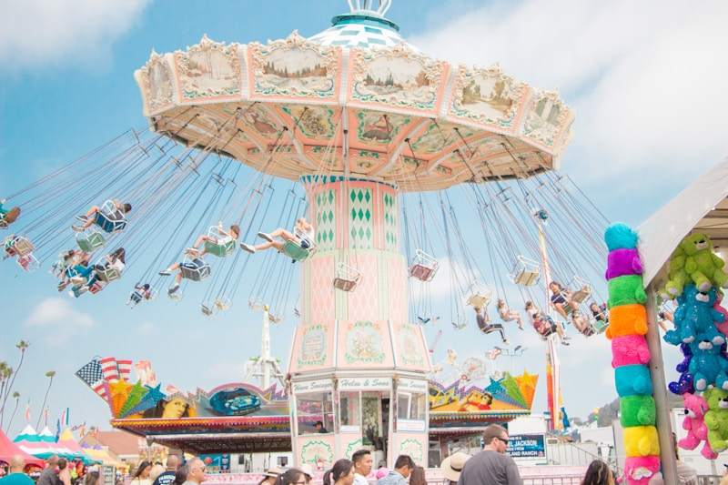
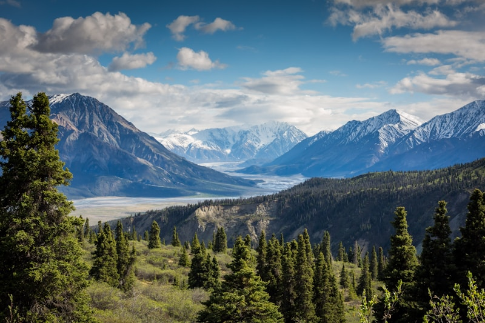
07:30-08:00
🍳 酒店早餐 · 准备出发
08:30-10:00
🚙 吉隆坡 → 云顶高原
车程约1.5小时，盘山公路蜿蜒而上
车程约1.5小时，盘山公路蜿蜒而上
10:00-10:30
🚡 云顶缆车（Awana Skyway）
东南亚最快最长的缆车，全长3.38公里，俯瞰热带雨林
天气好时能看到云海☁️
🎫 包车导游会协助购票
东南亚最快最长的缆车，全长3.38公里，俯瞰热带雨林
天气好时能看到云海☁️
🎫 包车导游会协助购票
10:30-12:30
🎡 云顶天城世界主题乐园（Skytropolis Indoor Theme Park）
室内主题乐园，有过山车、旋转木马等适合各年龄段的游乐设施
也可在云顶第一世界广场逛街、逛名牌折扣店
室内主题乐园，有过山车、旋转木马等适合各年龄段的游乐设施
也可在云顶第一世界广场逛街、逛名牌折扣店
12:30-13:30
🍜 午餐：云顶美食
第一世界广场内有众多餐厅，中式、马来式、西式任选
第一世界广场内有众多餐厅，中式、马来式、西式任选
13:30-14:30
🙏 清水岩庙（Chin Swee Caves Temple）
🎫 免费 位于半山的壮观佛寺，有巨大的观音像和九层宝塔
风景优美，可俯瞰山下的云海
🎫 免费 位于半山的壮观佛寺，有巨大的观音像和九层宝塔
风景优美，可俯瞰山下的云海
14:30-16:00
🛍️ 云顶Premium Outlets购物
各大品牌的折扣店，可顺便为家人朋友挑礼物
各大品牌的折扣店，可顺便为家人朋友挑礼物
16:00-17:30
🚙 返回吉隆坡
下山回市区
下山回市区
18:00-19:00
🏛️ 国家清真寺（National Mosque）
🎫 免费 如时间充裕，可顺路参观（距酒店车程10分钟）
独特的星形屋顶，可容纳15000人祈祷
非穆斯林在开放时间可进入，需穿长袍（门口免费提供）
🎫 免费 如时间充裕，可顺路参观（距酒店车程10分钟）
独特的星形屋顶，可容纳15000人祈祷
非穆斯林在开放时间可进入，需穿长袍（门口免费提供）
19:00-20:30
🍽️ 晚餐：茨厂街（Petaling Street / Chinatown）
推荐 · 丽丰茶冰室 — 牛肉面、冰咖啡
· 金莲记 — 福建面（槟城虾面风格）
· 饭后逛逛茨厂街夜市，买些小纪念品
推荐 · 丽丰茶冰室 — 牛肉面、冰咖啡
· 金莲记 — 福建面（槟城虾面风格）
· 饭后逛逛茨厂街夜市，买些小纪念品
📌 今日贴士
🧥 云顶高原气温比市区低10°C左右，记得带一件薄外套 · 🎡 室内主题乐园适合小朋友 · 🛍️ 云顶Premium Outlets常有不错折扣 · ⚠️ 赌场区域未成年人不得进入
5
8月8日（周六）
🚌 转战槟城 · 途经怡保美食之旅
🌤 怡保 25~33°C · 槟城 26~32°C
🏨 丹绒点公寓 Tanjung Point Residences（槟城）
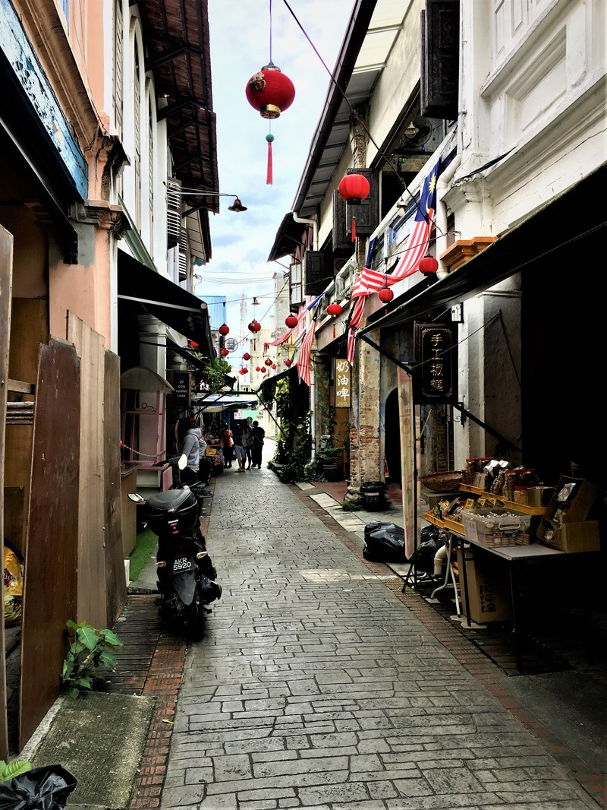
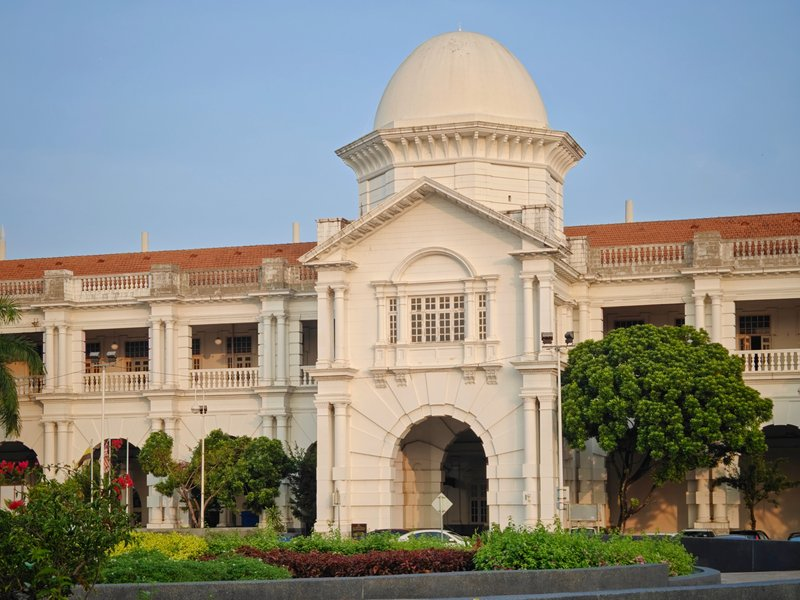
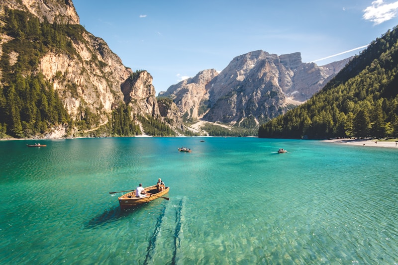
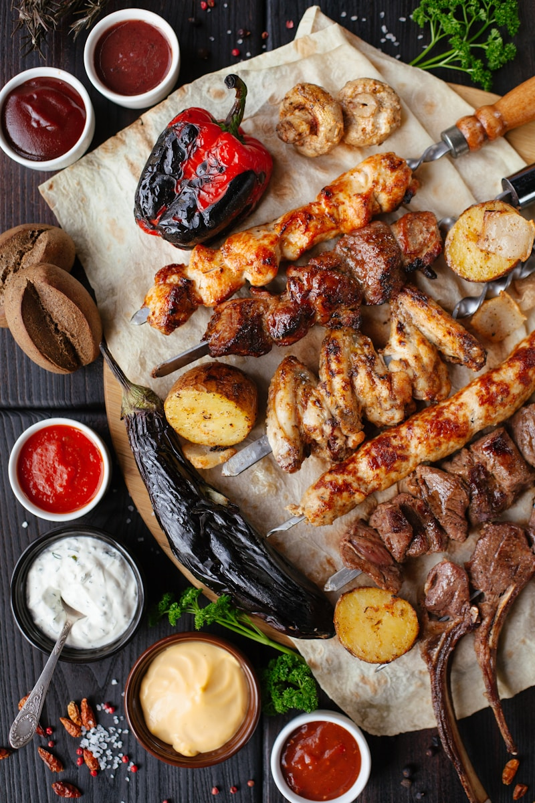
07:00-08:00
🍳 酒店早餐 · 退房
整理行李，办理退房手续
整理行李，办理退房手续
08:00-11:00
🚙 包车北上：吉隆坡 → 怡保（Ipoh）
全程约3小时 · 途经南北大道高速公路
沿途可欣赏马来西亚半岛的棕榈园和热带风光🌴
全程约3小时 · 途经南北大道高速公路
沿途可欣赏马来西亚半岛的棕榈园和热带风光🌴
11:00-13:00
🏘️ 怡保旧城区打卡
霹雳州首府，以白咖啡和壁画闻名
· 二奶巷（Concubine Lane） — 最热闹的打卡老街，文艺小店林立
· 三奶巷壁画街 — 铁线漫画和壁画，适合拍照
· 怡保火车站 — 纯白色殖民建筑，被称为"怡保的泰姬陵"🏛️
· 必喝 到怡保一定要喝一杯白咖啡！推荐南香白咖啡
霹雳州首府，以白咖啡和壁画闻名
· 二奶巷（Concubine Lane） — 最热闹的打卡老街，文艺小店林立
· 三奶巷壁画街 — 铁线漫画和壁画，适合拍照
· 怡保火车站 — 纯白色殖民建筑，被称为"怡保的泰姬陵"🏛️
· 必喝 到怡保一定要喝一杯白咖啡！推荐南香白咖啡
13:00-14:00
🍜 怡保午餐
必吃 · 怡保河粉（沙河粉） — 比广东的还滑嫩！推荐老黄芽菜鸡河粉
· 芽菜鸡 — 怡保特色，白切鸡配豆芽
· 盐焗鸡 — 用粗盐焗制，香嫩入味
必吃 · 怡保河粉（沙河粉） — 比广东的还滑嫩！推荐老黄芽菜鸡河粉
· 芽菜鸡 — 怡保特色，白切鸡配豆芽
· 盐焗鸡 — 用粗盐焗制，香嫩入味
14:00-17:00
🚙 怡保 → 槟城（Penang）
车程约3小时
沿西海岸北上，经过霹雳州和槟城跨海大桥🌉
车程约3小时
沿西海岸北上，经过霹雳州和槟城跨海大桥🌉
17:00-18:00
🏨 抵达槟城 · 办理入住
丹绒点公寓（Tanjung Point Residences）
海景三卧公寓，无边泳池，傍晚可以在公寓看海上日落🌅
丹绒点公寓（Tanjung Point Residences）
海景三卧公寓，无边泳池，傍晚可以在公寓看海上日落🌅
18:30-21:00
🌙 槟城美食初体验
必吃 前往新关仔角（Gurney Drive）夜市— 槟城最有名的小吃集中地
· 炒粿条（Char Kway Teow）— 槟城招牌！🦐
· 亚叁叻沙（Asam Laksa）— 酸辣鱼汤米粉
· 煎蕊（Cendol）— 椰奶绿豆冰甜品🍧
· 蚝煎（Oyster Omelette）— 鲜美酥脆
必吃 前往新关仔角（Gurney Drive）夜市— 槟城最有名的小吃集中地
· 炒粿条（Char Kway Teow）— 槟城招牌！🦐
· 亚叁叻沙（Asam Laksa）— 酸辣鱼汤米粉
· 煎蕊（Cendol）— 椰奶绿豆冰甜品🍧
· 蚝煎（Oyster Omelette）— 鲜美酥脆
📌 今日贴士
🧳 今日是转场日，请提前一天打包好行李 · ☕ 怡保白咖啡一定要买一些带回家！ · 🌉 槟城跨海大桥全长13.5公里，是亚洲最长跨海大桥之一
🏠 丹绒点公寓有厨房，可去超市买些水果饮料存放
🏠 丹绒点公寓有厨房，可去超市买些水果饮料存放
6
8月9日（周日）
🎨 乔治市文化包车一日游
🔄 不走回头路·顺时针环线🌤 晴 26~33°C
🏨 丹绒点公寓 Tanjung Point Residences
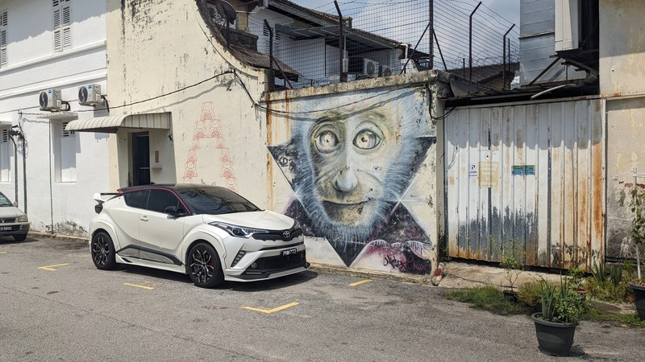
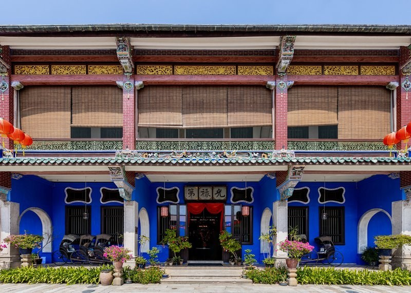
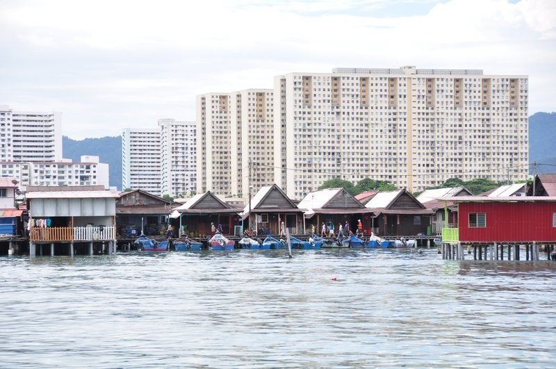


08:00-09:00
🍳 早餐
公寓内自理或外出享用槟城特色早餐
推荐 多春茶室（Toh Soon Cafe）— 碳烤面包+半熟蛋+海南咖啡
公寓内自理或外出享用槟城特色早餐
推荐 多春茶室（Toh Soon Cafe）— 碳烤面包+半熟蛋+海南咖啡
09:00-09:15
🚙 酒店出发 · 开启不走回头路环线
🔄 今日路线为顺时针环线：西→南→东→北，不折返
🔄 今日路线为顺时针环线：西→南→东→北，不折返
09:30-10:15
💙 张弼士故居（蓝屋 / Cheong Fatt Tze Mansion）
🎫 需预约参观 RM25 全槟城最有名的建筑！靛蓝色的中式庭院，张裕葡萄酒创始人故居
每天仅开放3个时段（11:00/14:00/15:30），选最早的场次
建议让导游提前预约11:00场次
🎫 需预约参观 RM25 全槟城最有名的建筑！靛蓝色的中式庭院，张裕葡萄酒创始人故居
每天仅开放3个时段（11:00/14:00/15:30），选最早的场次
建议让导游提前预约11:00场次
10:30-11:15
🏺 侨生博物馆 / 娘惹博物馆（Pinang Peranakan Mansion）
🎫 门票约RM20 展示峇峇娘惹文化的精美博物馆，华丽的金银器皿、家具和服饰
绿松石色的建筑本身就是风景，距蓝屋步行5分钟
🎫 门票约RM20 展示峇峇娘惹文化的精美博物馆，华丽的金银器皿、家具和服饰
绿松石色的建筑本身就是风景，距蓝屋步行5分钟
11:30-12:00
⛪ 圣乔治教堂（St. George's Church）→ 旧关仔角钟楼
🎫 免费 东南亚最古老的英国圣公会教堂（1818年建）
沿海边走到旧关仔角钟楼，维多利亚式地标建筑，纯白殖民风拍照点📸
🎫 免费 东南亚最古老的英国圣公会教堂（1818年建）
沿海边走到旧关仔角钟楼，维多利亚式地标建筑，纯白殖民风拍照点📸
12:00-13:30
🍜 午餐：乔治市美食探索
推荐 · 汕头街（Lebuh Kimberley） — 炒粿条、四果汤、鸭粥粿汁
· 伍秀泽海南鸡饭 — 老字号，仅收现金
· 或 Red Garden美食中心 — 品种丰富
推荐 · 汕头街（Lebuh Kimberley） — 炒粿条、四果汤、鸭粥粿汁
· 伍秀泽海南鸡饭 — 老字号，仅收现金
· 或 Red Garden美食中心 — 品种丰富
13:30-14:30
🎨 乔治市壁画街（Armenian Street Street Art）
🎫 免费 槟城标志性打卡点！立陶宛艺术家Ernest Zacharevic的壁画散落在老街各处
经典作品："姐弟共骑"、"骑自行车的小孩"、"追风少年"、"功夫女孩"
可租自行车边骑边找壁画🚲 巷弄里还有铁艺装置画
🎫 免费 槟城标志性打卡点！立陶宛艺术家Ernest Zacharevic的壁画散落在老街各处
经典作品："姐弟共骑"、"骑自行车的小孩"、"追风少年"、"功夫女孩"
可租自行车边骑边找壁画🚲 巷弄里还有铁艺装置画
14:45-15:15
💕 爱情巷（Love Lane）
文艺小街，有咖啡馆、小酒吧，适合散步拍照
白天文青风，晚上变酒吧街
文艺小街，有咖啡馆、小酒吧，适合散步拍照
白天文青风，晚上变酒吧街
15:15-15:30
🕌 小印度（Little India）
充满印度风情的街区，香料味弥漫，彩色建筑超好拍
可顺路逛逛印度杂货铺
充满印度风情的街区，香料味弥漫，彩色建筑超好拍
可顺路逛逛印度杂货铺
15:45-16:15
🏛️ 龙山堂邱公司（Khoo Kongsi）
🎫 门票约RM15 槟城最华丽的华人宗祠，精美雕刻和彩绘
了解华人下南洋的宗族文化
🎫 门票约RM15 槟城最华丽的华人宗祠，精美雕刻和彩绘
了解华人下南洋的宗族文化
16:30-18:30
🌉 姓周桥（Chew Jetty）看海上日落 🌅
🎫 免费 百年华人水上村落，《初恋红豆冰》取景地
木栈道延伸入海，两侧是高脚木屋
⏰ 建议16:30-17:30到达，正好赶上日落
夕阳洒在海面上的金光，配上剪影拍照绝美📸
附近"海墘大树下海鲜饭店"可吃晚餐
🎫 免费 百年华人水上村落，《初恋红豆冰》取景地
木栈道延伸入海，两侧是高脚木屋
⏰ 建议16:30-17:30到达，正好赶上日落
夕阳洒在海面上的金光，配上剪影拍照绝美📸
附近"海墘大树下海鲜饭店"可吃晚餐
18:30-20:00
🌙 汕头街（Kimberley Street）夜市晚餐
必吃 · 卤鸭粿条 · 炒粿角 · 四果汤（清凉甜品）
· 蚝煎 · 沙爹串 · 煎蕊 Cendol 🍧
或去牛干冬街（Chulia Street）夜市，更热闹
必吃 · 卤鸭粿条 · 炒粿角 · 四果汤（清凉甜品）
· 蚝煎 · 沙爹串 · 煎蕊 Cendol 🍧
或去牛干冬街（Chulia Street）夜市，更热闹
20:00
🚙 送返酒店，结束充实的一天
📌 今日贴士
🔵 蓝屋参观需预约，让导游提前订 · 🎨 壁画街建议租自行车逛，边走边拍效率最高 · 🌉 姓周桥17:00左右到达看日落最佳 · 👟 全程步行约6小时，穿舒适的鞋子
🆓 槟城有CAT免费空调巴士（环形19站，6:00-23:40，约20分钟一班），可到乔治市各主要景点
☕ 槟城Kopitiam文化：坐在骑楼街边喝一杯海南白咖啡（Kopii），配碳烤面包+半熟蛋，是槟城慢生活的精髓。推荐多春茶室、广泰来茶室
🆓 槟城有CAT免费空调巴士（环形19站，6:00-23:40，约20分钟一班），可到乔治市各主要景点
☕ 槟城Kopitiam文化：坐在骑楼街边喝一杯海南白咖啡（Kopii），配碳烤面包+半熟蛋，是槟城慢生活的精髓。推荐多春茶室、广泰来茶室
🗺️ 乔治市3日速览（小红书Kopii Wong攻略精华）
Day 1：乔治市壁画街 + 侨生博物馆 + 姓氏桥 → 汕头街夜市
Day 2：升旗山缆车🚡（建议买Fast Lane快速票）→ 极乐寺 → 峇都丁宜海滩日落
Day 3：娘惹博物馆补遗 / 自由探索 → 买伴手礼 → 返程
💡 升旗山旺季排队时间长，Fast Lane快速通道票能省1-2小时！
Day 1：乔治市壁画街 + 侨生博物馆 + 姓氏桥 → 汕头街夜市
Day 2：升旗山缆车🚡（建议买Fast Lane快速票）→ 极乐寺 → 峇都丁宜海滩日落
Day 3：娘惹博物馆补遗 / 自由探索 → 买伴手礼 → 返程
💡 升旗山旺季排队时间长，Fast Lane快速通道票能省1-2小时！